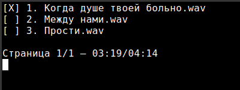

pmus
Минималистичный и быстрый музыкальный плеер для Unix-подобных систем.
Фильтр ограничен 9 песнями. Если песен больше, будут созданы страницы; перемещайтесь по ним с помощью стрелок влево и вправо. Выберите песню, используя номера в соответствии с её позицией (1–9).

Принцип работы и цель
Прямая передача аудиопотока в ALSA. Цель: минимальное потребление системных ресурсов и мгновенный запуск без лишних зависимостей и фоновых демонов.
Ограничения
- Работает только в терминале.
- Предназначен только для Unix/Linux.
- Поддерживаются только .wav и другие форматы, нативно принимаемые ALSA (поскольку используется исключительно ALSA, без внешних библиотек декодирования).
Скачать
Распакуйте и добавьте в систему.
- tar -xvf pmus.tar.gz
- mv pmus.sh pmus && chmod +x pmus.sh
- sudo mv pmus /usr/local/bin (Введите свой пароль sudo для разрешения доступа)
- Используйте:pmus /home/user/musics/Ploho/
Авторы и исходный код